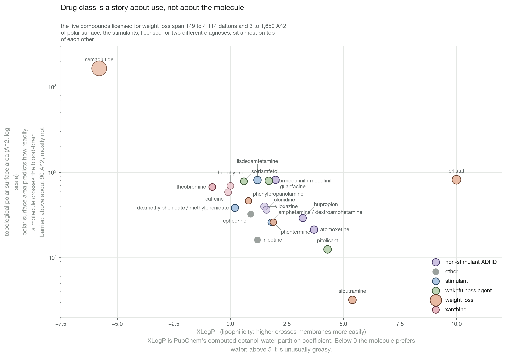
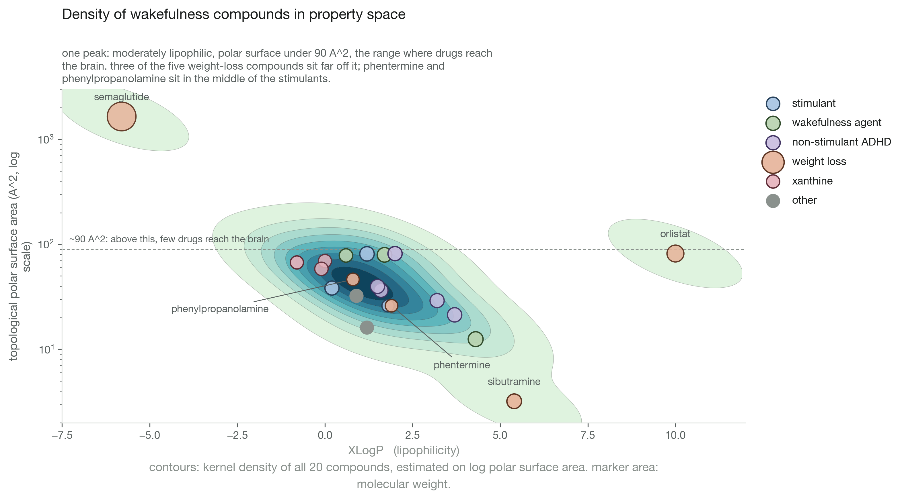

Drug classes against the chemistry
wakefulness, ADHD and weight-loss drugs plotted by molecular property
- skills
- cheminformatics · molecular descriptor analysis · API data collection · figure design
- tools
- data
- PubChem computed properties · hand-assigned use classes
- status
- finished
question
Do the classes medicine files these drugs under survive contact with the molecules?



calls made
- sampled by what each drug is licensed for, not by scaffold. sampling on structure would presuppose the answer.
- percentile rank on the radar spokes, not min-max. one peptide is twenty times the mass of everything else.
- XLogP against TPSA rather than a fingerprint embedding. both axes can be checked by a reader; an embedding only looks impressive.
- semaglutide kept, on a log axis. a small amine and a peptide inside one licensed class is the whole observation.
- withdrawn drugs kept in. keeping only the survivors removes the contrast.
what broke
- enantiomer pairs return identical 2D descriptors from PubChem and land on one point. merged into single markers, so the clinical difference between them is invisible here.
what i tried
scaled the radar spokes with min-max first. every small molecule collapsed onto the same dot beside the peptide, so switched to percentile rank within the set.